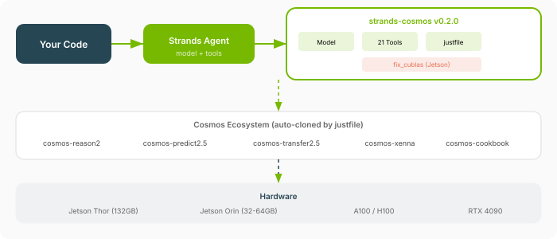
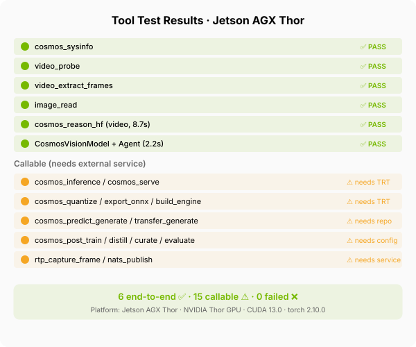

Architecture¶
How strands-cosmos is structured internally.
Package Structure¶
strands_cosmos/
├── __init__.py # Exports: 4 model providers + 45 tools
├── cosmos_model.py # Text-only model (Strands Model interface)
├── cosmos_vision_model.py # Vision model (video + image + text)
│ cosmos3_reasoner_model.py # Cosmos 3 Reasoner (vLLM, text+vision -> text)
│ cosmos3_generator_model.py # Cosmos 3 Generator (Diffusers, -> image/video/sound)
├── fix_cublas.py # Jetson CUBLAS compatibility fix
├── tools/ # 45 tools covering full Cosmos lifecycle
│ ├── _common.py # Shared justfile runner utility
│ ├── cosmos3.py # 16 Cosmos 3 tools (reason/generate/action/serve)
│ ├── inference.py # TRT server inference
│ ├── reason_hf.py # HF Transformers direct inference
│ ├── serve.py # TRT server lifecycle
│ ├── predict_generate.py # Predict2.5 world model generation
│ ├── transfer_generate.py # Transfer2.5 ControlNet video-to-video
│ ├── model_download.py # HF model download
│ ├── quantize.py # FP8 quantization
│ ├── export_onnx.py # ONNX export
│ ├── build_engine.py # TRT engine build
│ ├── post_train.py # Post-training (SFT/LoRA)
│ ├── distill.py # Knowledge distillation
│ ├── curate.py # Xenna data curation
│ ├── evaluate.py # Benchmark evaluation (FID/FVD/CSE)
│ ├── rtp.py # GStreamer RTP frame capture
│ ├── nats_pub.py # NATS publish
│ ├── video_utils.py # ffprobe + frame extraction
│ ├── image_read.py # Base64 image read
│ ├── sysinfo.py # System/GPU diagnostics
│ ├── cosmos_invoke.py # Legacy text tool
│ └── cosmos_vision_invoke.py # Legacy vision tool
└── justfile # Developer workflow automation (recipes)
Model Hierarchy¶
graph TD
SM["strands.models.Model<br/><i>Abstract base class</i>"] --> CM["CosmosModel<br/><i>Reason2 text-only</i>"]
SM --> CVM["CosmosVisionModel<br/><i>Reason2 video+image+text</i>"]
SM --> C3R["Cosmos3ReasonerModel<br/><i>omnimodal understanding</i>"]
SM --> C3G["Cosmos3GeneratorModel<br/><i>omnimodal generation</i>"]
CVM --> Q["Qwen3VL (Transformers)"]
CM --> Q
C3R --> VLLM["vLLM server<br/><i>Cosmos3ReasonerForConditionalGeneration</i>"]
C3G --> DIFF["Diffusers<br/><i>Cosmos3OmniPipeline</i>"]
Q --> GPU["🖥️ NVIDIA GPU"]
VLLM --> GPU
DIFF --> GPU
style SM fill:#264653,color:#fff
style CVM fill:#76b900,color:#fff
style CM fill:#76b900,color:#fff
style C3R fill:#4a1d96,color:#fff
style C3G fill:#4a1d96,color:#fffTool Architecture¶
All tools follow a common pattern: thin Python wrappers that delegate to just <recipe> commands from the justfile. This ensures:
- Reproducibility: every tool invocation maps to a concrete shell command
- Composability: tools can be combined by an agent in any order
- Platform awareness: justfile recipes handle OS/GPU detection
graph LR
Agent["Strands Agent"] --> Tool["@tool cosmos_predict_generate"]
Tool --> Just["just predict-generate config.json"]
Just --> Repo["cosmos-predict2.5/scripts/..."]
Repo --> GPU["CUDA / TRT"]
style Agent fill:#264653,color:#fff
style Tool fill:#76b900,color:#fff
style Just fill:#e76f51,color:#fffTool Categories¶
graph TD
subgraph "🧠 Reason2 VLM"
I[cosmos_inference] --> S[cosmos_serve]
R[cosmos_reason_hf]
end
subgraph "🌍 World Models"
P[cosmos_predict_generate]
T[cosmos_transfer_generate]
end
subgraph "🔧 Model Lifecycle"
D[cosmos_model_download] --> Q[cosmos_quantize]
Q --> E[cosmos_export_onnx]
E --> B[cosmos_build_engine]
end
subgraph "📚 Training"
PT[cosmos_post_train]
DT[cosmos_distill]
end
subgraph "📊 Data & Eval"
C[cosmos_curate]
EV[cosmos_evaluate]
end
subgraph "📡 I/O"
RTP[rtp_capture_frame]
NATS[nats_publish]
VP[video_probe]
VE[video_extract_frames]
IR[image_read]
endData Flow (Model Mode)¶
sequenceDiagram
participant User
participant Agent as Strands Agent
participant Model as CosmosVisionModel
participant HF as Transformers
participant GPU as CUDA
User->>Agent: agent("caption: <video>file.mp4</video>")
Agent->>Model: format_request(messages)
Model->>Model: Parse <video>/<image> tags
Model->>HF: processor(text, images, videos)
HF->>GPU: input_ids + pixel_values
GPU->>HF: logits (autoregressive)
HF->>Model: generated tokens (streaming)
Model->>Agent: format_response(stream_events)
Agent->>User: Result textData Flow (Tool Mode)¶
sequenceDiagram
participant User
participant Agent as Strands Agent (Bedrock/OpenAI)
participant Tool as cosmos_reason_hf tool
participant Model as CosmosVisionModel (loaded on first call)
participant GPU as CUDA
User->>Agent: "Analyze this video for safety"
Agent->>Tool: cosmos_reason_hf(video_path="...", prompt="...")
Tool->>Model: Load model (cached after first call)
Model->>GPU: Forward pass
GPU->>Model: Generated text
Model->>Tool: Response string
Tool->>Agent: {"status": "success", "content": [...]}
Agent->>User: Formatted analysisJustfile Integration¶
The justfile serves as the glue between Python tools and the Cosmos ecosystem repos:
┌─────────────────────────────────┐
│ Strands Agent + Python Tools │
└─────────────┬───────────────────┘
│ subprocess("just <recipe> ...")
▼
┌─────────────────────────────────┐
│ justfile (recipes) │
├─────────────────────────────────┤
│ • setup / doctor / install │
│ • predict-generate / transfer │
│ • quantize / export / build │
│ • serve-start / serve-stop │
│ • post-train / distill │
│ • evaluate / curate │
└─────────────┬───────────────────┘
│ calls scripts in:
▼
┌─────────────────────────────────┐
│ Cosmos Ecosystem Repos │
│ • cosmos-predict2.5 │
│ • cosmos-transfer2.5 │
│ • cosmos-reason2 │
│ • cosmos-xenna │
│ • cosmos-rl │
│ • cosmos-cookbook │
└─────────────────────────────────┘
Strands Model Interface¶
CosmosVisionModel implements the full Strands Model interface:
| Method | Purpose |
|---|---|
update_config() |
Merge user config |
get_config() |
Return current config |
format_request() |
Convert messages → HF inputs |
format_chunk() |
Stream tokens → StreamEvents |
format_response() |
Finalize response metadata |
Configuration¶
CosmosVisionModel(
model_id="nvidia/Cosmos-Reason2-2B",
device_map="auto",
torch_dtype="auto",
fps=4,
min_vision_tokens=256,
max_vision_tokens=8192,
reasoning=True,
params={"max_tokens": 4096, "temperature": 0.6, "top_p": 0.95},
)
Visual Overview¶
Pipeline¶

Architecture Layers¶

Tool Test Status (Jetson AGX Thor)¶
